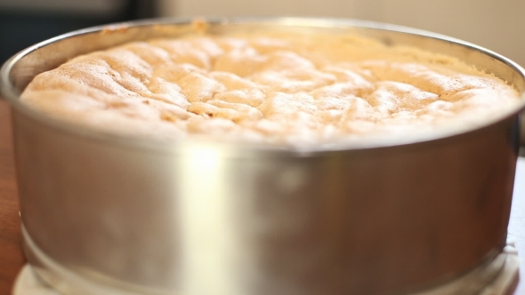
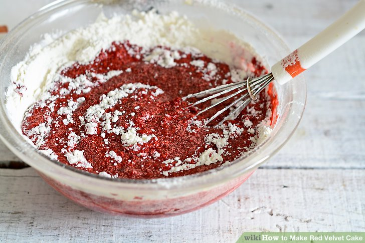
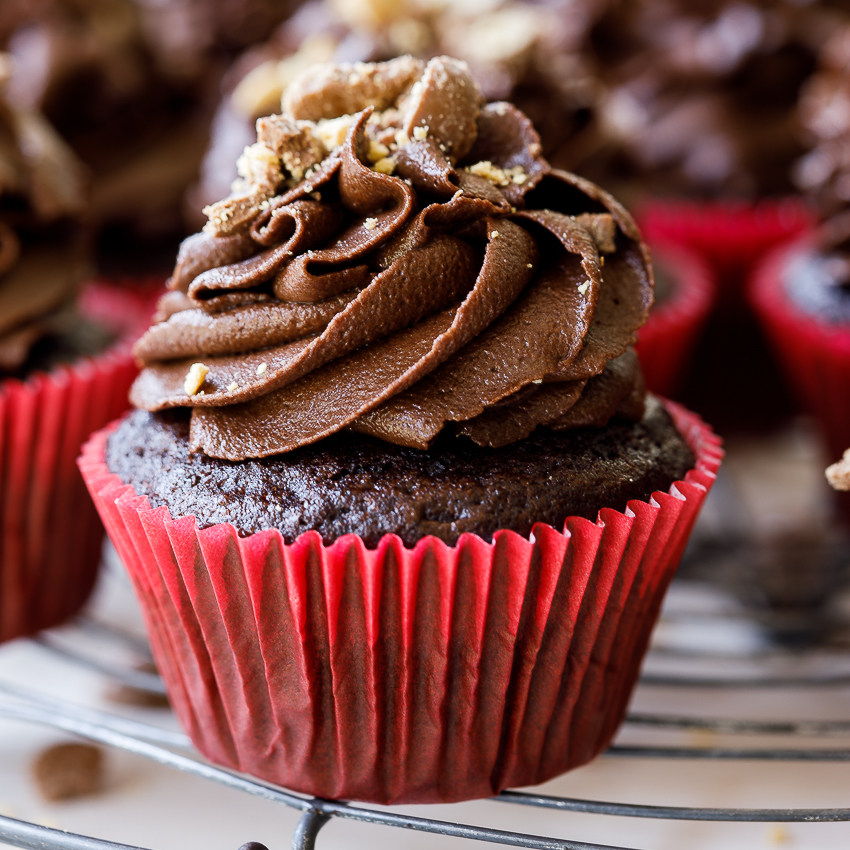

A cupcake (Also known as a fairy cake) is a small cake design to be eaten by one person baked in a thin paper wrapper, and decorated with frosting on top.
One of the mainstays at Coffee & Cake is our famous Red Velvet Cupcake. A well-guarded recipe combined with the natural ingredients make this little red rascal unapologetically delicious. Topped with decorative vanilla frosting the Red Velvet Cupcake is a favourite among kids as well.
| Freshly Bake |  |
| Homemade |  |
| Delicious!!!!!! |  |